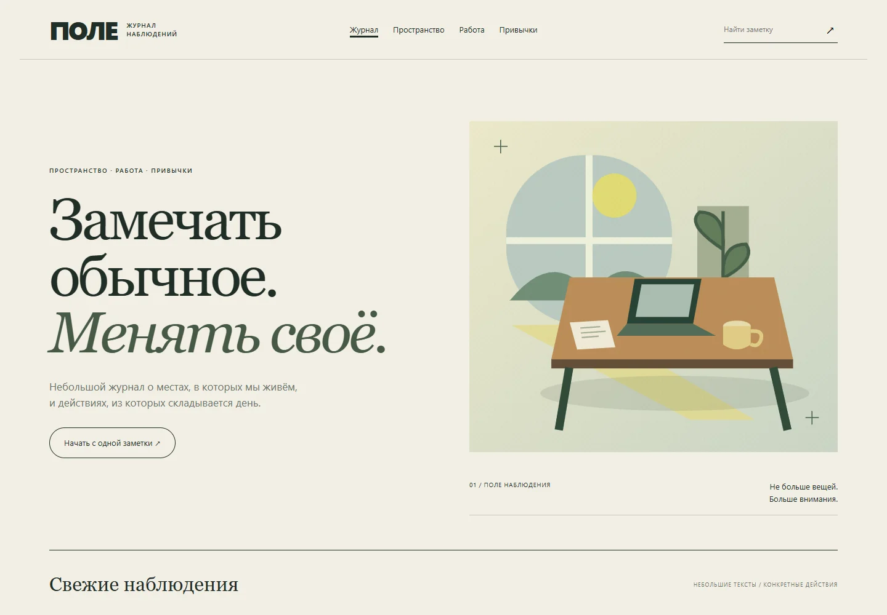
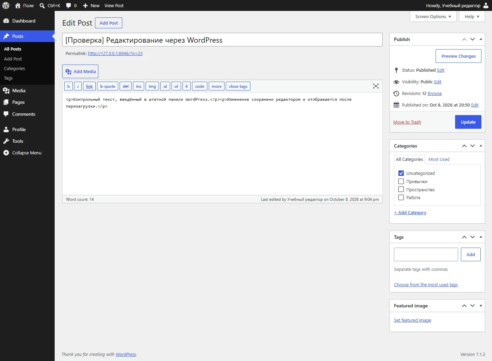
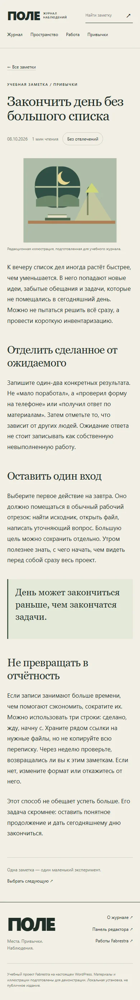

WORDPRESS / РЕДАКЦИОННЫЙ САЙТ
Поле.
Журнал, в котором текст живёт в системе управления, а не зашит в макет.
Учебная работа · настоящая локальная CMS
Своя тема, три рубрики и шесть оригинальных заметок. Поиск работает по публикациям WordPress. Редактор меняет текст в стандартной панели, и изменение появляется на сайте.
Ниже — реальные снимки работающей установки. Публичный адрес журнала пока не развёрнут.

Задача
Сделать небольшой редакционный сайт, где добавление материала не требует правки HTML. При этом сохранить индивидуальную композицию, рубрики и удобное чтение с телефона.
Что реализовано
- Три настоящие рубрики WordPress, по две статьи в каждой.
- Шесть заметок, изображения в медиатеке и отдельные страницы.
- Поиск по содержимому, пустая выдача и сброс.
- Режим чтения без отвлечений и индикатор прокрутки.
- Отдельный пользователь с ролью редактора.
- Создание, изменение, публикация и возврат статьи в черновики.
НЕ КАРТИНКА ВМЕСТО CMS
Правка из панели.
Результат на странице.
В проверке редактор вошёл в WordPress, создал контрольную статью, изменил текст и перезагрузил страницу. Новый текст сохранился в базе и отобразился на сайте. После проверки контрольная статья возвращена в черновики и недоступна обычному посетителю.
Настройки сайта редактору недоступны: проверен отказ доступа. Это штатные роли WordPress, не переключатель в демонстрационном интерфейсе.

ТЕКСТ / МОБИЛЬНЫЙ СЦЕНАРИЙ
От карточки
до спокойного чтения.
Открытие рубрики, поиск, переход в статью и обратный переход. На ширинах 320, 390, 768 и 1440 проверено отсутствие горизонтального переполнения.
Иллюстрации подготовлены для этого журнала. Нет вымышленных фотографий команды, отзывов и показателей аудитории.

Границы работы
Учебная установка на WordPress 7.1.3 с PHP и официальным SQLite Database Integration. Работает только на компьютере владельца. Эта страница показывает кейс и снимки, а не подменяет CMS статической имитацией.
Нет публичного хостинга, рассылки, рекламной монетизации или переноса действующего Diority. Публичное размещение потребует отдельной настройки сервера, обновлений, резервных копий и безопасности. Локальные пароли и база не включены в материалы портфолио.
8 октября 2026: 47 сценарных проверок, создание и редактирование через штатную панель, отсутствие ошибок страницы. Не заявляется готовность всех 16 проектов Fabrestra.